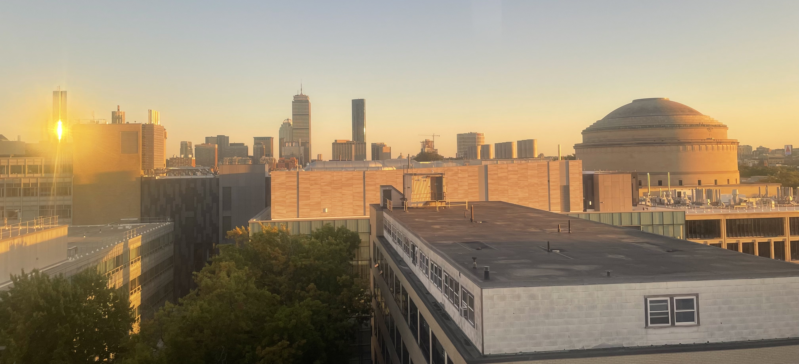

Monkey In Training (MIT)
Also affectionately known as Massachusetts Institute of Technology.
Welcome to my journey as an undergraduate! Currently, I'm interested in studying Mathematics with Computer Science (18-C) and Mechanical Engineering with an emphasis in Art & Design (2A-4B).
Coursework
Spring 2026 (projected)
- 6.1220: Design and Analysis of Algorithms
- 6.3900: Introduction to Machine Learning
- 2.00: Introduction to Design
- 8.02: Physics II
- 21M.030: Introduction to Musics of the World
IAP 2026
- MISTI GTL Rwanda
Fall 2025
- 6.1010: Fundamentals of Programming
- 6.1210: Introduction to Algorithms
- 9.01: Introduction to Neuroscience
- ES.9114: Non-violence as a Way of Life
- PE.0626 (Q1): Rifle
- PE.0640 (Q2): Self Defense for Everyone
- 4.S21: Architecture Studies
Prior Credit
- 18.06: Linear Algebra
- 18.05: Introduction to Probability and Statistics
- 18.03: Differential Equations
- 18.02: Multivariable Calculus
- 6.100A: Introduction to Programming
- 8.01: Physics I
- 7.012: Introduction to Biology
Activities & Societies
Undergraduate Researcher
Analyzed high-speed video data collected from pianists playing various musical excerpts. Performed transformations on the piano keyboard region in each video into a standardized coordinate system, enabling consistent tracking of keypress locations across different trials and subjects.
Developer
Contribute to the development of MapIT, an interactive map of MIT’s floor plans that helps students navigate campus efficiently. Support a growing user base of 1,000+ students by implementing features and improving usability.
Vocalist
Perform as a vocalist in MIT-Wellesley Toons, one of the longest-running acappella groups on campus. Participate in rehearsals, recordings, and live performances, contributing to group arrangements and harmonies. Engage in campus and community events to promote the group’s music.
Staff
Research and write articles covering student life and campus events for MIT’s student newspaper. Conduct interviews, gather multimedia content, and craft engaging stories for the campus community. Collaborate with editors to meet deadlines and maintain journalistic standards.
Officer
Per DormCon, "Coordinate the process of creating and distributing the i3s by coordinating between administrators and the dorm i3 chairs."
Videographer
Produce and edit